Qwen3 SpecDec Evaluation Dashboard
Updated through the June 4, 2026 02:21 PDT poll. This page combines completed vLLM standalone ceilings, real-prompt standalone isolation results, current NeMo-RL rollout metrics, gate diagnostics, acceptance projections, step-level acceptance rates, and the fixed/online drafter follow-up matrix.
13:35 PDT Logprob Bottleneck Diagnostic
The fixed/offline GRPO loop now skips reference-policy logprob fprop when reference_policy_kl_penalty=0. A second explicit diagnostic switch, NRL_GRPO_SKIP_POLICY_LOGPROBS_IF_SAFE=true, skips policy prev-logprob fprop only when force_on_policy_ratio=true, KL penalty is zero, and importance-sampling paths are disabled. Default GRPO remains unchanged.
| Job | Mode | Status | Purpose |
|---|---|---|---|
| 3131108 | Baseline r2 | FAILED | Changed-objective baseline with BF16/KV-auto and logprob skip; failed before rollout in Megatron optimizer scheduler assertion lr_warmup_steps < lr_decay_steps |
| 3131109 | K=1 always-on r2 | FAILED | Same diagnostic settings plus Eagle-3 K=1 and runtime gate disabled; same scheduler assertion, no metric |
| 3131110 | K=3 always-on r2 | FAILED | Same diagnostic settings plus Eagle-3 K=3 and runtime gate disabled; same scheduler assertion, no metric |
| 3131615-3131617 | r3 reuse-venv | CANCELED | Invalid batch: it called stale root launchers. Do not use as evidence. |
| 3131648 | Baseline r4 | FAILED | Same scheduler assertion, no metric |
| 3131649 | K=1 always-on r4 | FAILED | Corrected reuse-venv launcher with Eagle-3 K=1 and runtime gate disabled; same scheduler assertion, no metric |
| 3131650 | K=3 always-on r4 | FAILED | Corrected reuse-venv launcher with Eagle-3 K=3 and runtime gate disabled; same scheduler assertion, no metric |
| 3132444 | Baseline r5 | COMPLETED | Step 1-4 metrics emitted: mean generation 4260.76 generated tok/s/GPU and mean E2E 2608.80 tok/s/GPU. |
| 3132445-3132446 | K=1/K=3 r5 | FAILED | Slurm Ray-head step failed with memory requirement error; not a model/code result |
| 3132635 | K=1 r6 | COMPLETED | Step 1-4 metrics emitted: mean generation 5498.34 tok/s/GPU, generation speedup 1.290x, mean E2E 3004.60 tok/s/GPU, E2E speedup 1.152x, mean acceptance 60.57%. |
| 3132636 | K=3 r6 | COMPLETED | Step 1-4 metrics emitted: mean generation 5721.98 tok/s/GPU, generation speedup 1.343x, mean E2E 3065.85 tok/s/GPU, E2E speedup 1.175x, mean acceptance 35.75%, Step 4 per-position acceptance 55.59% / 33.05% / 18.37%. |
These jobs are not default GRPO results. They isolate how much E2E speedup is capped by post-rollout policy/reference logprob work. The chart now includes matched generation speedup, E2E speedup, and acceptance. The mean inferred generation time share is about 58%, so non-generation work caps E2E. Online Qwen3-8B r73 short512 reached generation but failed in policy-side TransformerEngine RMSNorm; r75 passed logprobs after local spec/no-fused-softmax but failed in online EAGLE draft enorm TE RMSNorm; r77 proved local-spec HF reconvert needed dense Qwen3Bridge local layernorm mappings; r78 recovered acceptance to 57.5-63.0% and passed logprobs but failed in ModelOpt EAGLE decoder input_layernorm TE RMSNorm; r79 cleared recursive EAGLE TE RMSNorm and passed logprobs, then failed later in Megatron DDP grad finalization with a 0/3 no-grad bucket assertion. r80 disabled DDP overlap and moved the blocker to a helper signature mismatch; r81/r82 were launcher/Ray environment failures; r83 fixed Ray/vLLM initialization but was cancelled before rollout metrics.
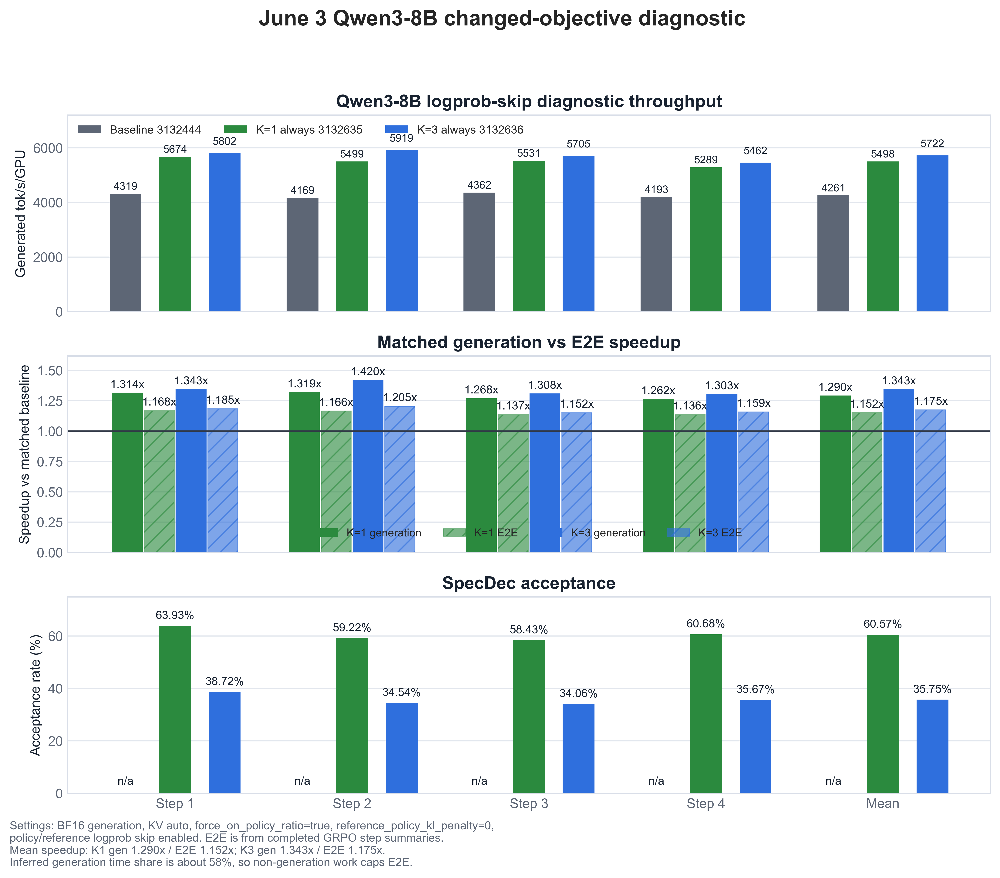
02:21 PDT Online Drafter Update
Qwen3-8B online drafter training now has completed one-step metrics. r84/r85 completed the default-style worker≈32/fixed512 matched pair: K=1 always was generation 0.605x, E2E 0.914x, acceptance 40.80%. r86/r87 completed the greedy/fixed512 matched pair: K=1 always was generation 0.757x, E2E 1.066x, acceptance 41.82%. r88/r89 then reran the same greedy/fixed512 comparison after worker-side fixed-length SamplingParams support with actor venv rebuild; r89 was still generation 0.732x, E2E 1.029x, acceptance 42.01%. This rules out missing min_tokens/ignore_eos/stop-disable propagation as the primary cause of the Qwen3-8B online slowdown.
r90/r91 validated the greedy training-loss fix: temperature=0.0 no longer makes Draft Loss NaN. Both failed before Step 2 in offload_before_refit because CPU gradients were assigned to CUDA parameters. The grad-offload fallback was patched, and clean finite-loss + gradfix r92/r93 jobs completed. r93 K=1 acceptance rose from 42.24% on Step 1 to 70.42% on Step 2 and 71.70% on Step 5, but aggregate speedup remains generation 0.964x and E2E 0.980x.
The 20-step follow-up r94/r95/r96 completed. r95 K=1 always recovers generation speedup: generation throughput 1.093x, generation step-time 1.093x, E2E throughput 1.029x, E2E step-time 1.029x, mean acceptance 61.20%. r96 K=3 always remains a net generation slowdown: generation throughput 0.968x, E2E throughput 0.995x, mean acceptance 37.46%. The baseline generation slice is only 6.83% of total step time, so even the K=1 generation improvement only moves E2E by about 2.9%.
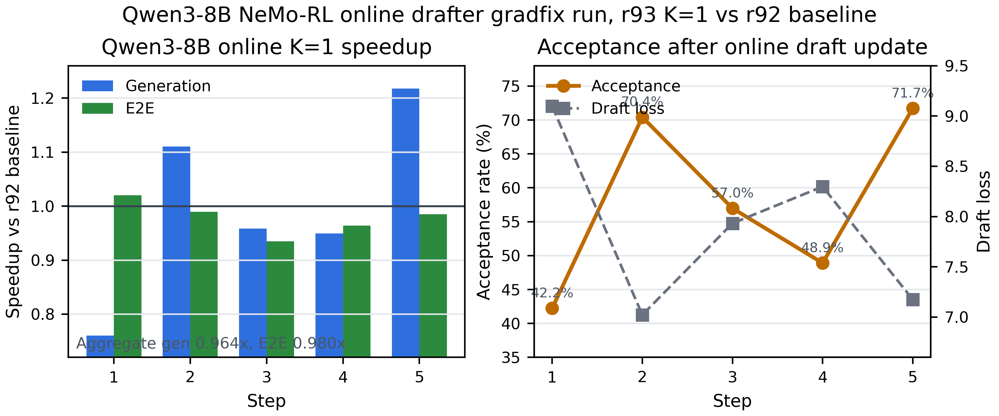
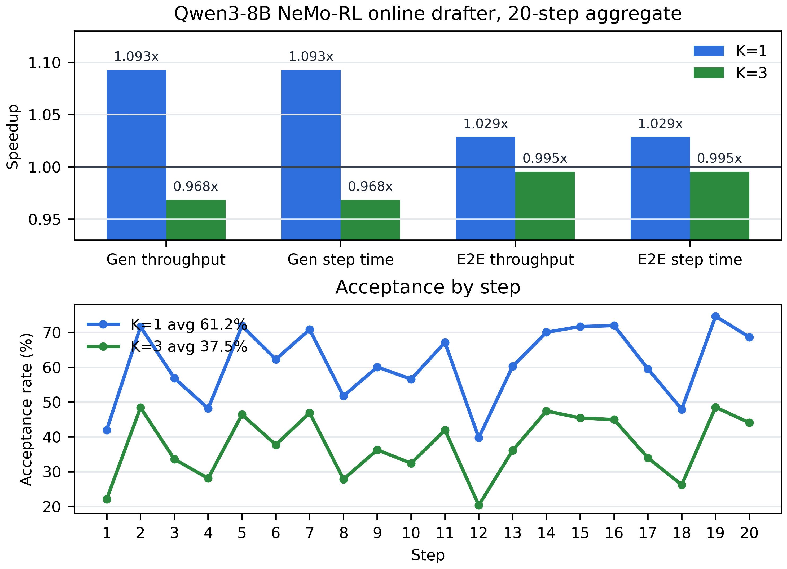
| Model | Old failed job | Failure class | New prep/smoke | Dependent matrix | Status |
|---|---|---|---|---|---|
| Qwen3-8B | 3130576, 3130760, 3130928, 3131454 | rope_scaling=null; then single-node driver memory step failure; then short-smoke scheduler assertion; then vLLM V1 SpecDec bookkeeping assertion during rollout generation | none active | K=1/2/3 always/gated: 3131455, 3131456, 3131457, 3131458, 3131459, 3131460 wait on failed afterok:3131454 | FAILED; r61 smoke had draft enabled, BF16, KV auto, and scheduler override, but failed at assert sampled_token_ids.shape[-1] == 1; no metric |
| Qwen3-8B V6 retry | 3133314 | V6 runtime patch aligns scheduler lookahead gate with runner batch gate by using max(len(self.running), len(num_scheduled_tokens)+1) | 3133314 | K=1/2/3 always/gated retry: 3133315, 3133316, 3133317, 3133318, 3133319, 3133320 | FAILED; reached rollout generation, then failed before SpecDec early metric with the same vLLM V1 sampled_token_ids.shape[-1] == 1 assertion. Dependent matrix was cancelled. |
| Qwen3-8B V9/r68 retry | 3133619, 3133620, 3133622, 3133624, 3133925 | V9 adds runner active-batch pressure and zero-draft disabled path; r68 adds scheduler-output scrub because r67 still left speculative scheduler metadata when the runner gate was disabled | 3133925 gated scrub smoke failed before rollout | 3133621/3133623/3133625 were cancelled after the V9 smoke failed | FAILED r68 actor venv build hit disk quota before rollout; r67 gated failed in vLLM V1 bookkeeping; r67 always K=1/K=2/K=3 failed in policy-side TransformerEngine RMSNorm CUDA invalid-argument; no online rollout metric yet |
| Qwen3-8B r73-r83 short512 | 3136275, 3136718, 3137127, 3137466, 3137513, 3137739, 3139283, 3139703, 3140266, 3140576 | r73 validates short512 K=1 always online path with draft enabled, BF16 generation, KV auto; r74/r75 force local transformer spec and disable masked softmax fusion; r77 validates local-spec HF reconvert but exposed dense Qwen3Bridge mapping gaps; r78 validates that mapping fix and reaches training; r79 clears recursive EAGLE TE RMSNorm but exposes DDP no-grad bucket overlap assertion; r80 disables DDP overlap but hits helper signature mismatch; r81/r82 expose launcher/Ray setup issues | 3140704 Ray-match retry | none | CANCELLED r83 fixed Ray versioning and initialized vLLM workers through CUDA Graph capture, but no rollout metric emitted before cancellation |
| Qwen3-8B r84-r89 completed online pairs | 3141902, 3142137, 3142745, 3142746, 3143675, 3143676 | Matched online drafter worker≈32/fixed512 pairs, including greedy and post-SamplingParams-patch reruns with actor venv rebuild | completed | none | COMPLETED default-style K=1 was generation 0.605x / E2E 0.914x / acceptance 40.80%; greedy K=1 was generation 0.757x / E2E 1.066x / acceptance 41.82%; post-patch greedy K=1 was generation 0.732x / E2E 1.029x / acceptance 42.01% |
| Qwen3-8B r90-r93 finite-loss online rerun | 3144473, 3144474, 3144992, 3144993 | r90/r91 confirmed finite draft loss after the temperature=0.0 training patch but failed before Step 2 in grad offload; r92/r93 reran after gradfix and completed 5/5 steps | 3144992 baseline and 3144993 K=1 always | none | COMPLETED r93 acceptance 42.24%, 70.42%, 56.98%, 48.91%, 71.70%; step gen speedups 0.760x, 1.110x, 0.959x, 0.949x, 1.217x; aggregate gen/E2E 0.964x/0.980x |
| Qwen3-8B r94-r96 finite-loss 20-step online rerun | 3145919, 3145920, 3145921 | Longer fixed512 greedy 20-step baseline/K=1/K=3 comparison after finite-loss and grad-offload patches | 3145919 baseline, 3145920 K=1 always, 3145921 K=3 always | none | COMPLETED K=1 generation/E2E 1.093x/1.029x with 61.20% mean acceptance; K=3 generation/E2E 0.968x/0.995x with 37.46% mean acceptance |
| Qwen3-32B | 3130535, 3130930, 3131904, 3132468, 3132637 | missing provider rope_scaling_factor; then Megatron buffer API mismatch; then stale actor venv missing tensordict; then Slurm Ray-head memory step; latest r64 reached rollout generation setup but failed during policy-to-vLLM draft-weight streaming with KeyError: 'draft.fc.weight' | none active | K=1/2/3 always/gated retry 3132638, 3132639, 3132641, 3132642, 3132643, 3132644 | FAILED; r64 actor venv rebuild/suffix path worked, but vLLM worker state_dict_info did not contain streamed draft key draft.fc.weight; dependent matrix jobs were cancelled |
| Qwen3-30B-A3B | 3130615, 3130929 | missing MoE provider rope_scaling_factor; then vLLM Qwen3-MoE fused-MoE loader rejected shard_dim=0 for a 3D expert tensor during policy-to-vLLM weight streaming | none active | K=1/2/3 always/gated: 3130932, 3130936, 3130939, 3130941, 3130944, 3130947 are waiting on failed afterok:3130929 | FAILED; MasterConfig showed draft enabled, BF16, KV auto, but no rollout metric |
10:10 PDT Fixed/Offline Update
The fixed/offline matrix has log-backed metrics through 8-20 rollout steps depending on job. Qwen3-8B timed out at the 4h walltime after 8-10 observed steps; those final observed metrics are retained. Qwen3-32B K=1/K=3 and Qwen3-30B-A3B are complete at 20 steps. The latest PNGs were regenerated from specdec_followup_latest_metrics.json at 512 dpi.
| Model | K | Gate | Job | Status | Observed steps | Mean gen tok/s/GPU | Mean acceptance | Latest gate enabled |
|---|---|---|---|---|---|---|---|---|
| Qwen3-8B | 1 | Always | 3127152 | TIMEOUT | 9 | 5547.06 | 60.84% | n/a |
| Qwen3-8B | 1 | Gated | 3127155 | TIMEOUT | 8 | 4027.48 | 51.73% | scheduler 0.02%, runner 0.63% |
| Qwen3-8B | 3 | Always | 3127158 | TIMEOUT | 10 | 5915.66 | 36.04% | n/a |
| Qwen3-8B | 3 | Gated | 3127161 | TIMEOUT | 8 | 4038.35 | 28.17% | scheduler 0.02%, runner 0.63% |
| Qwen3-32B | 1 | Always | 3128147 | COMPLETED | 20 | 2388.46 | 69.45% | n/a |
| Qwen3-32B | 1 | Gated | 3128148 | COMPLETED | 20 | 1643.20 | 45.58% | scheduler 0.26%, runner 4.10% |
| Qwen3-32B | 3 | Always | 3128428 | COMPLETED | 20 | 2405.82 | 45.28% | n/a |
| Qwen3-32B | 3 | Gated | 3128429 | COMPLETED | 20 | 1651.10 | 23.65% | scheduler 0.22%, runner 3.21% |
| Qwen3-30B-A3B | 1 | Always | 3128151 | COMPLETED | 20 | 5601.48 | 57.51% | n/a |
| Qwen3-30B-A3B | 1 | Gated | 3128152 | COMPLETED | 20 | 4372.35 | 48.00% | scheduler 0.00%, runner 0.02% |
| Qwen3-30B-A3B | 3 | Always | 3128153 | COMPLETED | 20 | 4896.03 | 31.80% | n/a |
| Qwen3-30B-A3B | 3 | Gated | 3128154 | COMPLETED | 20 | 4357.91 | 23.64% | scheduler 0.00%, runner 0.01% |
Qwen3-8B online drafter training now has completed paired metrics through the 20-step finite-loss + gradfix follow-up and the engine-shaped rerun. r84/r85 completed the default-style worker≈32/fixed512 matched pair: K=1 always was generation 0.605x, E2E 0.914x, acceptance 40.80%. r86/r87 completed the greedy/fixed512 matched pair: K=1 always was generation 0.757x, E2E 1.066x, acceptance 41.82%. r88/r89 completed the post-SamplingParams-patch greedy rerun with actor venv rebuild: K=1 always was generation 0.732x, E2E 1.029x, acceptance 42.01%. r92/r93 completed after the gradfix with improved acceptance but aggregate gen/E2E 0.964x/0.980x. r94/r95/r96 20-step comparison shows K=1 generation/E2E 1.093x/1.029x with 61.20% mean acceptance, while K=3 is generation/E2E 0.968x/0.995x with 37.46% mean acceptance. The final r97/r98/r99 engine-shaped rerun shows K=1 generation/E2E 1.120x/1.060x with 61.75% acceptance, and K=3 generation/E2E 1.009x/1.041x with 37.40% acceptance.
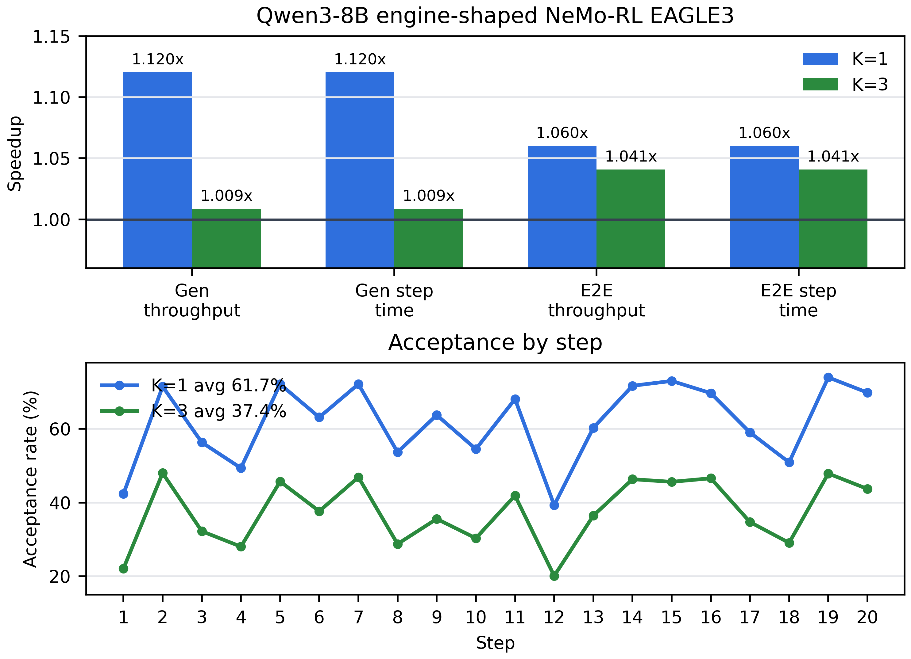
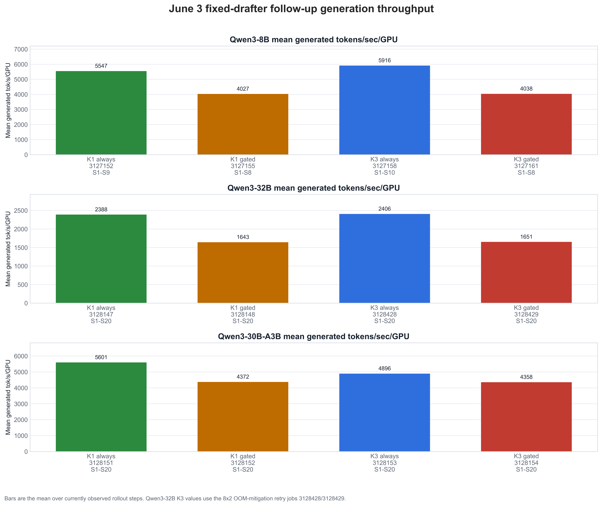
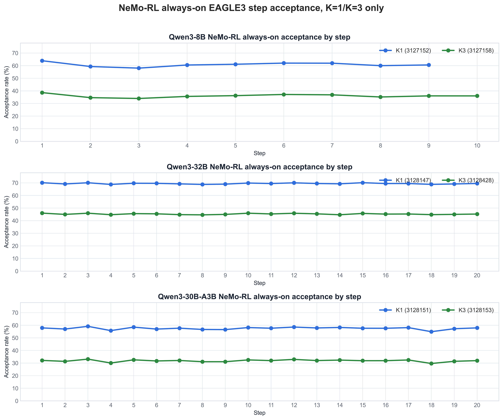
Historical Submitted Follow-Up Matrix
This section is retained for traceability and is superseded by the 10:48 and 10:10 PDT tables above. Some rows below show the status from the earlier 04:12 PDT poll and should not be read as current job state.
Historical 04:12 PDT Snapshot
| Group | Model | K | Gate | Job | Status | Current metric / reason |
|---|---|---|---|---|---|---|
| Fixed drafter | Qwen3-8B | 1 | Always | 3127152 | RUNNING | Step 1 generated tok/s/GPU 5648.64, acceptance 63.93%; Step 2 generated 5551.14, acceptance 59.33%; Step 3 generated 5432.50, acceptance 58.06% |
| Fixed drafter | Qwen3-8B | 1 | Gated | 3127155 | RUNNING | Step 1 generated tok/s/GPU 4091.79, acceptance 54.20%, scheduler enabled 0.04%; Step 2 generated 4021.44, acceptance 49.68%, scheduler enabled 0.03% |
| Fixed drafter | Qwen3-8B | 3 | Always | 3127158 | RUNNING | Step 1 generated tok/s/GPU 5812.01, acceptance 38.65%; Step 2 generated 5983.01, acceptance 34.64%; Step 3 generated 5698.97, acceptance 33.98% |
| Fixed drafter | Qwen3-8B | 3 | Gated | 3127161 | RUNNING | Step 1 generated tok/s/GPU 4095.04, acceptance 30.06%, scheduler enabled 0.03%; Step 2 generated 4039.39, acceptance 26.64%, scheduler enabled 0.02% |
| Fixed retry | Qwen3-32B | 1 | Always | 3128147 | RUNNING | Step 1 generated tok/s/GPU 2327.40, acceptance 70.13%; Step 2 generated 2519.32, acceptance 69.13% |
| Fixed retry | Qwen3-32B | 1 | Gated | 3128148 | RUNNING | Step 1 generated tok/s/GPU 1584.49, acceptance 47.13%, scheduler enabled 0.26%; Step 2 generated 1803.00, acceptance 40.56%, scheduler enabled 0.28% |
| Fixed retry | Qwen3-32B | 3 | Always/Gated | 3128149/3128150 | FAILED | 4 GPUs/node layout hit node-memory OOM; K=3 gated emitted Step 1 generated tok/s/GPU 1588.65 and acceptance 24.73% before failing |
| Fixed retry | Qwen3-32B | 3 | Always/Gated | 3128428/3128429 | RUNNING | 8 nodes x 2 GPUs retry to reduce per-node CPU memory pressure while preserving 16 total GPUs |
| Fixed retry | Qwen3-30B-A3B | 1 | Always | 3128151 | RUNNING | Step 1/2/3 generated tok/s/GPU 5745.88/5311.72/5987.16; acceptance 57.91%/57.01%/59.15% |
| Fixed retry | Qwen3-30B-A3B | 1 | Gated | 3128152 | RUNNING | Step 1/2/3 generated tok/s/GPU 4425.95/4209.63/4621.79; acceptance 64.88%/46.08%/52.53%; scheduler enabled near 0% |
| Fixed retry | Qwen3-30B-A3B | 3 | Always | 3128153 | RUNNING | Step 1/2/3 generated tok/s/GPU 4918.23/4860.85/5195.76; acceptance 32.11%/31.35%/33.13% |
| Fixed retry | Qwen3-30B-A3B | 3 | Gated | 3128154 | RUNNING | Step 1/2/3 generated tok/s/GPU 4434.02/4185.37/4608.09; acceptance 38.81%/20.11%/24.80%; scheduler enabled near 0% |
| Online smoke | Qwen3-8B | 1 | Always | 3128421 | RUNNING | Python 3.13 online draft path with wheel-only TE; no TransformerEngine.git/transformer-engine-torch/Building transformer-engine log line, no failure yet |
Historical online attempts below are retained for traceability. Earlier online attempts failed before rollout due to Python version, missing workspace members, stale lock resolution, missing system deps, quota, or CUDA mismatch while building Qwen-unneeded dependencies; the current valid smoke is 3128421.
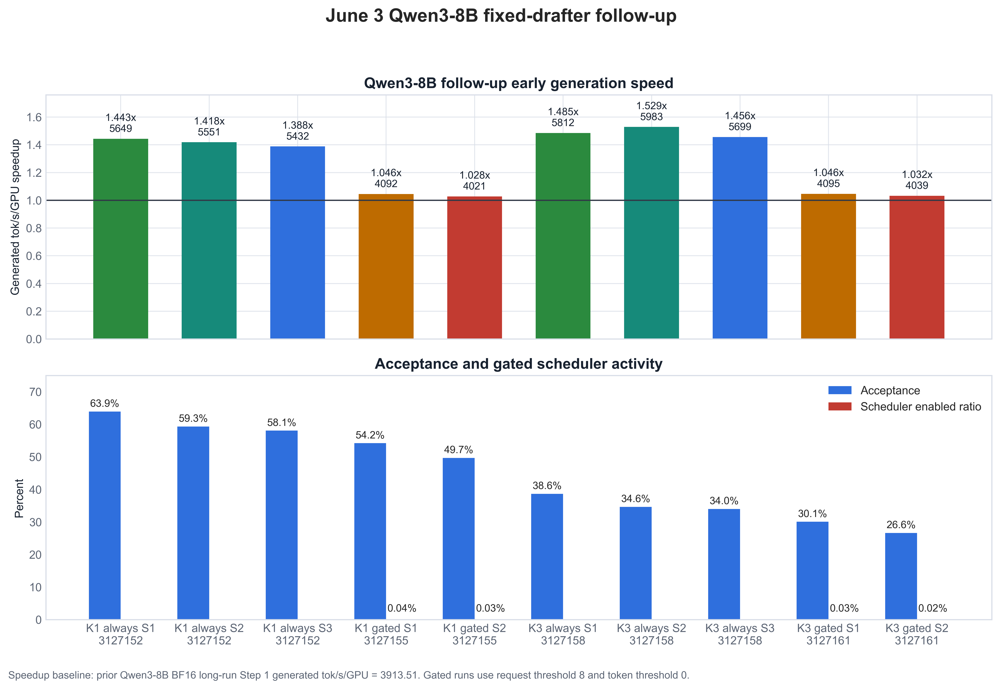
| Mode | Model | K | Gate | Job | Status | Notes |
|---|---|---|---|---|---|---|
| Fixed drafter | Qwen3-8B | 1 | Always | 3127152 | RUNNING | BF16, KV auto, runtime gate off |
| Fixed drafter | Qwen3-32B | 1 | Always | 3127153 | FAILED | Initial batch hit fs1 quota during actor venv build; retry job 3128147 is running |
| Fixed 500K drafter | Qwen3-30B-A3B | 1 | Always | 3127154 | FAILED | Initial batch hit fs1 quota during actor venv build; retry job 3128151 is running |
| Fixed drafter | Qwen3-8B | 1 | Gated | 3127155 | RUNNING | Runtime request gate threshold 8 |
| Fixed drafter | Qwen3-32B | 1 | Gated | 3127156 | FAILED | Initial batch hit fs1 quota during actor venv build; retry job 3128148 is running |
| Fixed 500K drafter | Qwen3-30B-A3B | 1 | Gated | 3127157 | FAILED | Initial batch hit fs1 quota during actor venv build; retry job 3128152 is running |
| Fixed drafter | Qwen3-8B | 3 | Always | 3127158 | RUNNING | Runtime gate off |
| Fixed drafter | Qwen3-32B | 3 | Always | 3127159 | FAILED | Initial batch hit fs1 quota; 4x4 retry 3128149 failed from node-memory OOM; 8x2 retry 3128428 is running |
| Fixed 500K drafter | Qwen3-30B-A3B | 3 | Always | 3127160 | FAILED | Initial batch hit fs1 quota during actor venv build; retry job 3128153 is running |
| Fixed drafter | Qwen3-8B | 3 | Gated | 3127161 | RUNNING | Runtime request gate threshold 8 |
| Fixed drafter | Qwen3-32B | 3 | Gated | 3127162 | FAILED | Initial batch hit fs1 quota; 4x4 retry 3128150 failed from node-memory OOM after Step 1; 8x2 retry 3128429 is running |
| Fixed 500K drafter | Qwen3-30B-A3B | 3 | Gated | 3127163 | FAILED | Initial batch hit fs1 quota during actor venv build; retry job 3128154 is running |
| Online draft training | Qwen3-8B/32B/30B | 1/3 | Always/Gated | 3127386, 3127399-3127409 | FAILED | Superseded batch; failed before rollout while resolving/building Python 3.13 CUDA13 dependencies |
Current Interpretation
The newest Qwen3-8B long-rollout data strongly implicates the runtime scheduler gate. With the TLT-style gate, K=1/K=2/K=3 Step 1 generation is only about 1.035-1.041x, and the latest gated points remain modest through Step 5/8. When the gate is disabled, K=1 generation is 1.373-1.458x and K=3 generation is 1.433-1.578x through Step 4. E2E improves to 1.163-1.196x for K=1 and 1.204-1.253x for K=3 through Step 4.
This is not the whole story. The short512 and r22 exact-engine/no-gate diagnostics show K=1 can help in NeMo-RL (1.278-1.299x generation, 64.61% acceptance), while K=3 can regress badly under the same fixed 512-token greedy shape (0.423-0.452x, 40.66% acceptance). That points to both gate behavior and K/workload fit, not BF16 vs FP8, as the main variables.
Qwen3-32B now shows the same gate pattern. Gated K=1/K=2/K=3 all completed 20 steps and remain below baseline on average. Always-on K=1/K=3 improves generation to 1.331-1.430x and E2E to 1.149-1.196x through Step 4. K=2 always-on failed before aggregate rollout metrics under high KV-cache pressure, so it is not counted.
Gate metrics confirm the code-level mechanism: with request threshold 8 and token threshold 4096, scheduler lookahead is enabled only about 0.03-0.04% of observed 8B gated decisions and about 0.23-0.27% of observed 32B gated decisions. Runner-side draft generation is also only about 1-4% active. The gated runs are therefore mostly baseline decoding with a small long-tail SpecDec tail.
Latest exact-engine status: r22 emitted the key generation-only metrics. Baseline 3126355 reached 5652.52 generated tok/s/GPU. Native K=1 3126356 reached 7345.13 generated tok/s/GPU, giving 1.299x generation speedup with 64.61% acceptance. Native K=3 3126357 reached 2555.29 generated tok/s/GPU, giving 0.452x with 40.66% acceptance and per-position acceptance 61.05%, 38.46%, 22.27%. Dynamic-cap r24 3126685 used a K=3 engine with scheduler effective_k=1 and reached 4446.23 tok/s/GPU, or 0.787x vs the exact-engine baseline, despite 64.60% acceptance. This shows native K=1 is materially better than simulating K=1 through a K=3 dynamic-cap engine in the current code path.
New isolation axis: Qwen3-8B vLLM standalone DAPOMath real-prompt bs32 retry2 completed after tokenizer fallbacks were patched. The result is a regression for every K: K=1 0.665x with 61.11% acceptance, K=2 0.817x with 46.91% acceptance, and K=3 0.853x with 36.62% acceptance. This means the synthetic fixed-prompt standalone 2x speedup is not representative of the real DAPOMath prompt distribution.
Qwen3-8B DAPOMath Standalone Isolation
vLLM standalone bs32 on real DAPOMath prompts. This isolates prompt/domain mismatch from NeMo-RL overhead: every SpecDec K regresses against the standalone baseline.
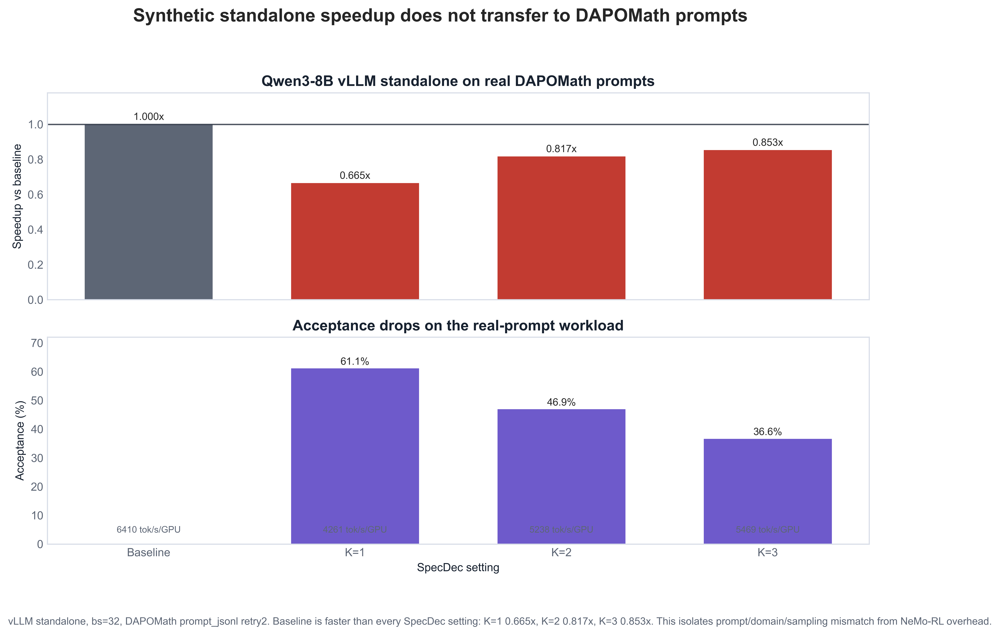
Gate Enabled Ratio
Mean of observed SpecDec early gate rows. This explains why the TLT-style gated setting does not reproduce always-on or standalone throughput.
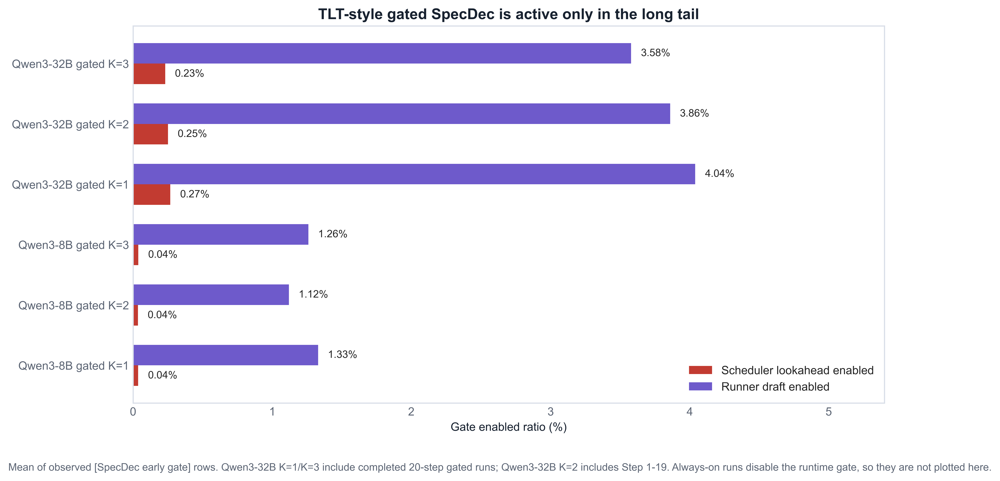
Current NeMo-RL Early Speedup
Generation and E2E speedups where matched baselines exist. Short512/r22 exact diagnostics are generation-only; earlier short512 diagnostics failed after generation/training NaN.

Qwen3-8B Gate Diagnostic
Long-rollout rows compare against BF16 long baseline 3124761 Step 1. r22 exact-engine rows compare against baseline 3126355 and are generation-only stop-after-generation diagnostics.
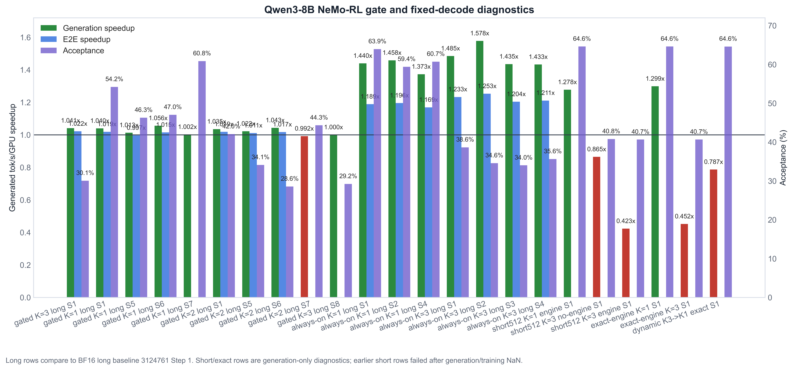
Qwen3-32B Gate Diagnostic
Matched-step comparison against baseline 3124830. K=2 always-on failed before aggregate rollout metrics and is omitted from the chart; K=1/K=3 always-on now have E2E through Step 4.
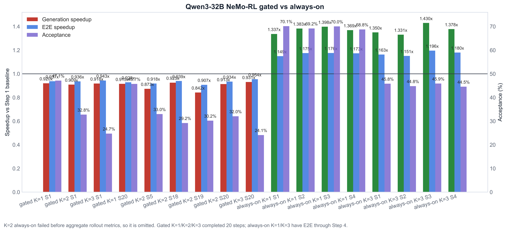
Qwen3-8B Acceptance Projection
What-if K=3 projection from the current always-on Step 1-4 acceptance. Generation lift is linearly scaled and capped at the measured vLLM standalone K=3 ceiling; E2E uses an Amdahl-style generation fraction.
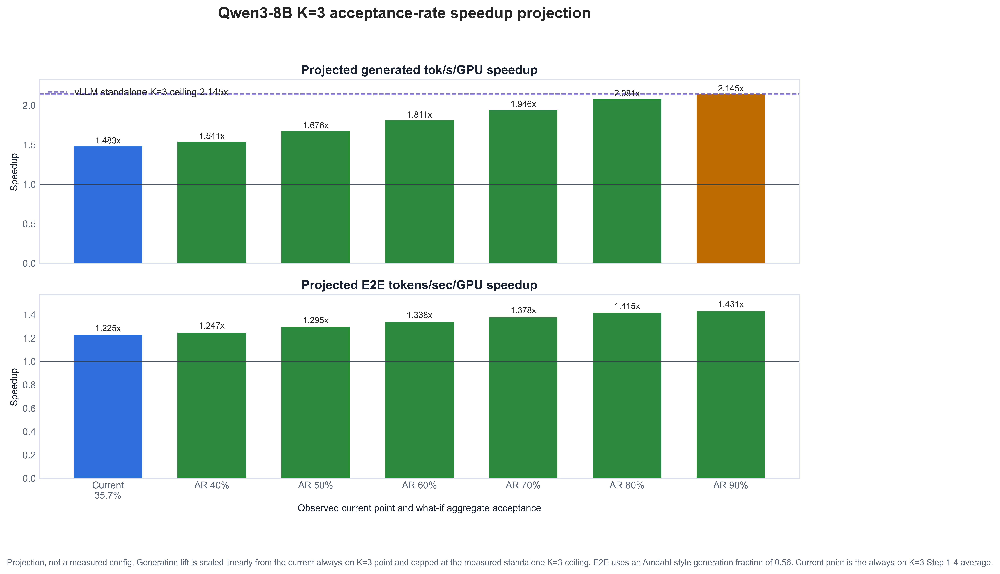
Qwen3-32B Acceptance Projection
What-if K=3 projection from the current always-on Step 1-4 acceptance. This is not a measured config result; it shows the implied speedup target if aggregate acceptance improves.
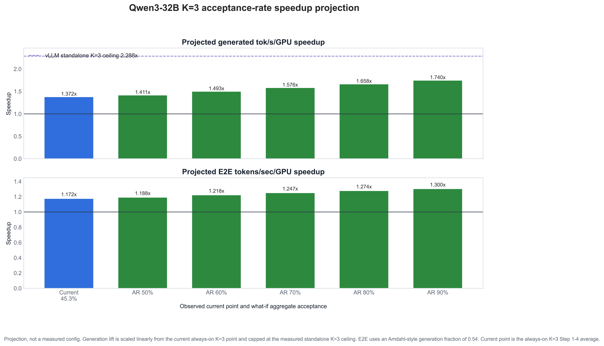
Qwen3-8B Step Acceptance Rate
Top: aggregate acceptance by rollout step. Bottom: K=3 per-position acceptance for gated, always-on, and short512 diagnostics.
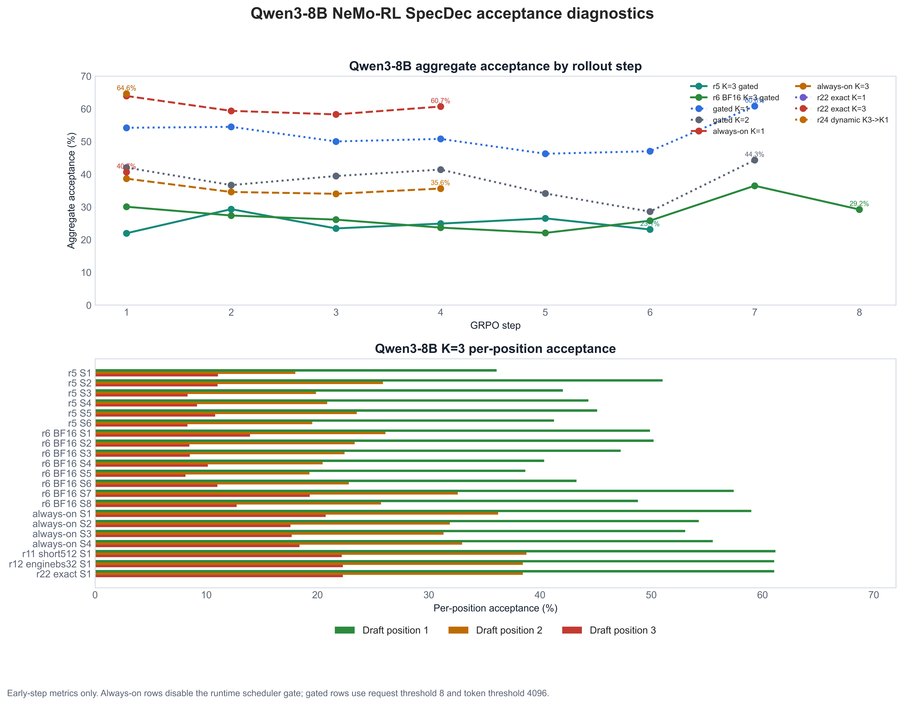
Qwen3-32B Step Acceptance Rate
Top: aggregate acceptance by rollout step. Bottom: K=3 per-position acceptance for gated and always-on diagnostics.
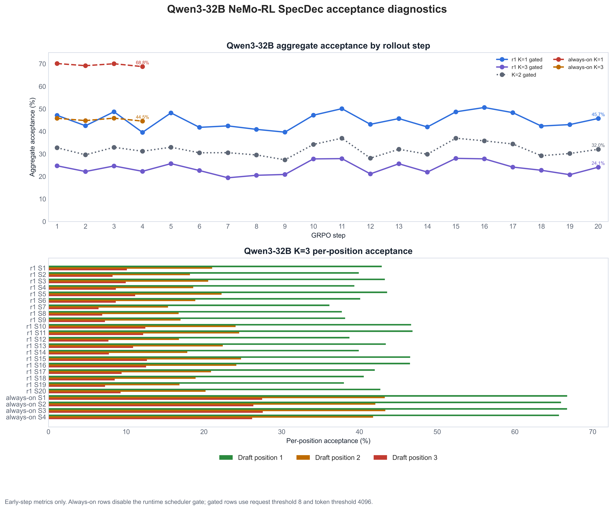
vLLM Standalone Ceiling
Generation-only fixed decode, ISL/OSL 1000/512, dtype auto, KV auto. Qwen3-8B K=2 and Qwen3-32B K=3 are the strongest completed standalone points.
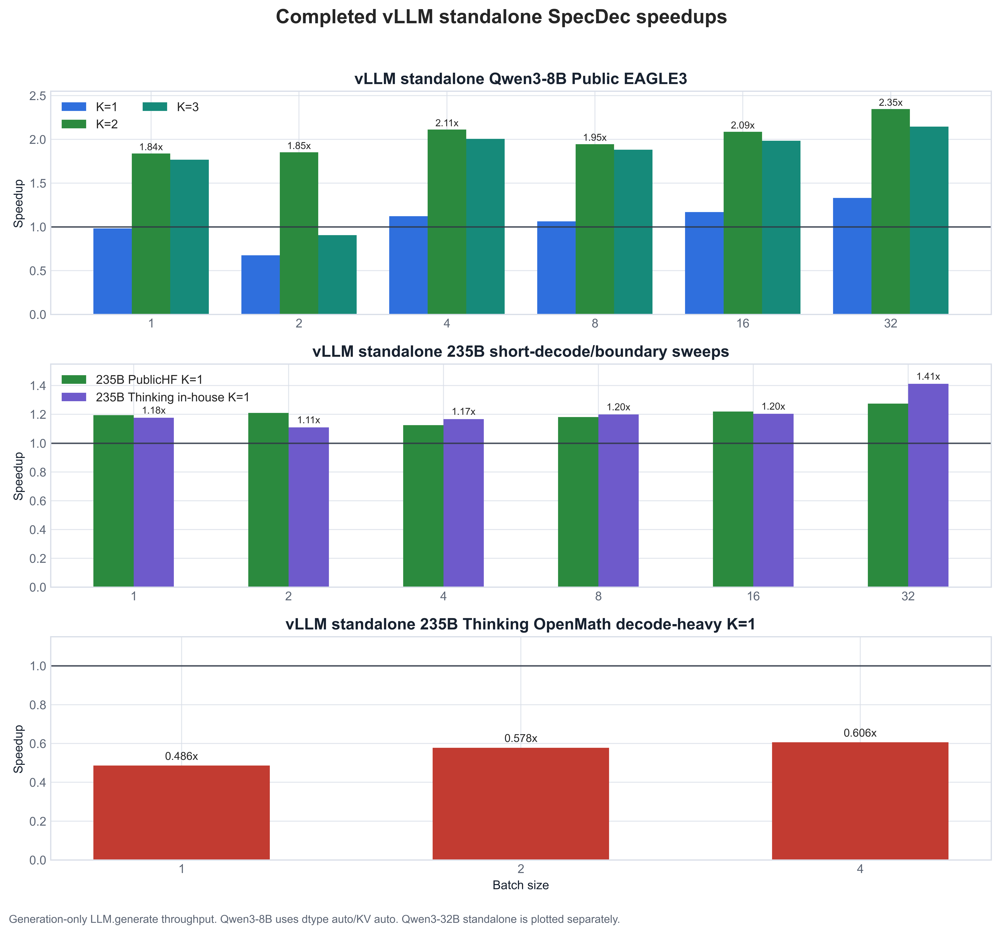
Qwen3-32B Standalone
Qwen3-32B standalone has healthy K=1/K=2/K=3 acceptance and speedup, but this has not transferred to gated NeMo-RL yet.
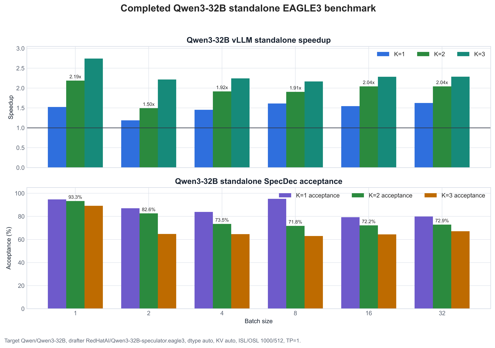
Qwen3-8B NeMo-RL Current Results
| Run | Step | Gen speedup | E2E speedup | Acceptance | Per-position acceptance | Status |
|---|---|---|---|---|---|---|
| r5 K=3 gated, FP8 weight/KV auto | 1 | 1.057x | 1.028x | 21.96% | 36.10%, 18.00%, 11.05% | running |
| r5 K=3 gated, FP8 weight/KV auto | 2 | 1.047x | 1.022x | 29.32% | 51.02%, 25.88%, 11.01% | running |
| r5 K=3 gated, FP8 weight/KV auto | 3 | 1.049x | 1.018x | 23.43% | 42.05%, 19.86%, 8.32% | running |
| r5 K=3 gated, FP8 weight/KV auto | 4 | 1.038x | 1.019x | 24.90% | 44.35%, 20.87%, 9.16% | running |
| r5 K=3 gated, FP8 weight/KV auto | 5 | 1.059x | 1.027x | 26.51% | 45.13%, 23.52%, 10.80% | running |
| r5 K=3 gated, FP8 weight/KV auto | 6 | 1.055x | 1.030x | 23.11% | 41.26%, 19.52%, 8.31% | running |
| r6 K=3 gated, BF16/KV auto | 1 | 1.041x | 1.022x | 30.06% | 49.88%, 26.10%, 13.93% | running |
| r6 K=3 gated, BF16/KV auto | 2 | 1.059x | 1.023x | 27.38% | 50.21%, 23.34%, 8.48% | running |
| r6 K=3 gated, BF16/KV auto | 3 | 1.048x | 1.019x | 26.12% | 47.25%, 22.42%, 8.51% | running |
| r6 K=3 gated, BF16/KV auto | 4 | 1.019x | 1.009x | 23.68% | 40.37%, 20.46%, 10.13% | running |
| r6 K=3 gated, BF16/KV auto | 5 | 1.014x | 1.004x | 22.06% | 38.68%, 19.27%, 8.13% | running |
| r6 K=3 gated, BF16/KV auto | 6 | 1.056x | 1.025x | 25.79% | 43.28%, 22.81%, 11.00% | running |
| r6 K=3 gated, BF16/KV auto | 7 | 1.013x | 1.005x | 36.48% | 57.41%, 32.61%, 19.30% | running |
| r6 K=3 gated, BF16/KV auto | 8 | 1.000x | pending | 29.22% | 48.80%, 25.70%, 12.73% | timed out after Step 8 metric |
| K=1 gated long rollout | 1 | 1.040x | 1.019x | 54.20% | 54.20% | running |
| K=1 gated long rollout | 2 | 1.055x | 1.018x | 54.49% | 54.49% | running |
| K=1 gated long rollout | 3 | 1.049x | 1.016x | 50.03% | 50.03% | running |
| K=1 gated long rollout | 4 | 1.032x | 1.010x | 50.80% | 50.80% | running |
| K=1 gated long rollout | 5 | 1.013x | 0.997x | 46.27% | 46.27% | running |
| K=1 gated long rollout | 6 | 1.056x | 1.015x | 47.03% | 47.03% | running |
| K=1 gated long rollout | 7 | 1.002x | pending | 60.84% | 60.84% | running |
| K=2 gated long rollout | 1 | 1.035x | 1.019x | 42.05% | 54.11%, 29.93% | running |
| K=2 gated long rollout | 2 | 1.051x | 1.026x | 36.68% | 48.67%, 24.65% | running |
| K=2 gated long rollout | 3 | 1.052x | 1.026x | 39.45% | 52.77%, 26.04% | running |
| K=2 gated long rollout | 4 | 1.010x | 1.006x | 41.42% | 52.99%, 29.76% | running |
| K=2 gated long rollout | 5 | 1.022x | 1.011x | 34.12% | 45.14%, 23.03% | running |
| K=2 gated long rollout | 6 | 1.043x | 1.017x | 28.57% | 37.82%, 19.18% | running |
| K=2 gated long rollout | 7 | 0.992x | pending | 44.32% | 56.39%, 32.18% | running |
| K=1 always-on long rollout | 1 | 1.440x | 1.189x | 63.93% | 63.93% | completed |
| K=1 always-on long rollout | 2 | 1.458x | 1.196x | 59.38% | 59.38% | completed |
| K=1 always-on long rollout | 3 | 1.383x | 1.163x | 58.30% | 58.30% | completed |
| K=1 always-on long rollout | 4 | 1.373x | 1.169x | 60.70% | 60.70% | completed |
| K=3 always-on long rollout | 1 | 1.485x | 1.233x | 38.65% | 58.99%, 36.23%, 20.73% | completed |
| K=3 always-on long rollout | 2 | 1.578x | 1.253x | 34.58% | 54.27%, 31.90%, 17.56% | completed |
| K=3 always-on long rollout | 3 | 1.435x | 1.204x | 34.02% | 53.05%, 31.33%, 17.68% | completed |
| K=3 always-on long rollout | 4 | 1.433x | 1.211x | 35.63% | 55.53%, 33.00%, 18.37% | completed |
| r11 K=3 short512/greedy/no-logprob/no-stop | 1 | 0.865x | invalid | 40.79% | 61.16%, 38.78%, 22.18% | failed after generation |
| r12 K=3 short512/greedy/enginebs32 | 1 | 0.423x | invalid | 40.66% | 61.05%, 38.46%, 22.27% | failed after generation |
| K=1 short512/greedy/engine diagnostic | 1 | 1.278x | invalid | 64.61% | 64.61% | failed after generation |
| r22 K=1 exact-engine/no-gate | 1 | 1.299x | generation-only | 64.61% | 64.61% | stop-after-generation |
| r22 K=3 exact-engine/no-gate | 1 | 0.452x | generation-only | 40.66% | 61.05%, 38.46%, 22.27% | stop-after-generation |
| r24 dynamic-cap K=3 engine, effective K=1 | 1 | 0.787x | generation-only | 64.60% | effective K=1; K=3 per-position denominator unreliable | completed stop-after-generation |
| r84 online K=1 always vs r85 online baseline | 1 | 0.605x | 0.914x | 40.80% | 40.80% | completed matched online pair |
| r87 greedy online K=1 always vs r86 greedy online baseline | 1 | 0.757x | 1.066x | 41.82% | 41.82% | completed greedy matched online pair; generation itself is slower |
Qwen3-32B NeMo-RL Current Results
| Run | Step | Gen speedup | E2E speedup | Acceptance | Per-position acceptance |
|---|---|---|---|---|---|
| r1 K=1 gated | 1 | 0.920x | 0.937x | 47.13% | 47.13% |
| r1 K=1 gated | 2 | 0.936x | 0.947x | 42.50% | 42.50% |
| r1 K=1 gated | 3 | 0.957x | 0.942x | 48.71% | 48.71% |
| r1 K=1 gated | 4 | 0.956x | 0.950x | 39.57% | 39.57% |
| r1 K=1 gated | 5 | 0.901x | 0.917x | 48.22% | 48.22% |
| r1 K=1 gated | 6 | 0.961x | 0.951x | 41.79% | 41.79% |
| r1 K=1 gated | 7 | 0.955x | 0.947x | 42.44% | 42.44% |
| r1 K=1 gated | 8 | 0.920x | 0.926x | 40.90% | 40.90% |
| r1 K=1 gated | 9 | 0.924x | 0.931x | 39.66% | 39.66% |
| r1 K=1 gated | 10 | 0.948x | 0.941x | 47.18% | 47.18% |
| r1 K=1 gated | 11 | 0.911x | 0.927x | 50.09% | 50.09% |
| r1 K=1 gated | 12 | 0.951x | 0.944x | 43.14% | 43.14% |
| r1 K=1 gated | 13 | 0.946x | 0.942x | 45.69% | 45.69% |
| r1 K=1 gated | 14 | 0.941x | 0.938x | 41.96% | 41.96% |
| r1 K=1 gated | 15 | 0.895x | 0.913x | 48.68% | 48.68% |
| r1 K=1 gated | 16 | 0.907x | 0.922x | 50.61% | 50.61% |
| r1 K=1 gated | 17 | 0.874x | 0.906x | 48.32% | 48.32% |
| r1 K=1 gated | 18 | 0.938x | 0.935x | 42.37% | 42.37% |
| r1 K=1 gated | 19 | 0.842x | 0.889x | 43.02% | 43.02% |
| r1 K=1 gated | 20 | 0.915x | 0.928x | 45.73% | 45.73% |
| K=2 gated | 1 | 0.909x | 0.936x | 32.75% | 43.65%, 21.81% |
| K=2 gated | 2 | 0.951x | 0.967x | 29.60% | 40.60%, 18.54% |
| K=2 gated | 3 | 0.949x | 0.966x | 32.93% | 43.50%, 22.30% |
| K=2 gated | 4 | 0.945x | 0.960x | 31.19% | 42.08%, 20.23% |
| K=2 gated | 5 | 0.873x | 0.918x | 32.97% | 43.78%, 22.11% |
| K=2 gated | 6 | 0.952x | 0.964x | 30.50% | 41.29%, 19.63% |
| K=2 gated | 7 | 0.946x | 0.959x | 30.54% | 41.03%, 19.98% |
| K=2 gated | 8 | 0.906x | 0.937x | 29.54% | 40.35%, 18.68% |
| K=2 gated | 9 | 0.916x | 0.939x | 27.37% | 37.64%, 17.02% |
| K=2 gated | 10 | 0.948x | 0.960x | 34.21% | 45.14%, 23.24% |
| K=2 gated | 11 | 0.916x | 0.944x | 36.98% | 48.22%, 25.68% |
| K=2 gated | 12 | 0.942x | 0.957x | 28.12% | 38.99%, 17.19% |
| K=2 gated | 13 | 0.946x | 0.960x | 32.06% | 42.66%, 21.40% |
| K=2 gated | 14 | 0.935x | 0.952x | 29.85% | 41.09%, 18.53% |
| K=2 gated | 15 | 0.890x | 0.929x | 36.97% | 47.88%, 26.02% |
| K=2 gated | 16 | 0.918x | 0.945x | 35.80% | 46.65%, 24.90% |
| K=2 gated | 17 | 0.869x | 0.919x | 34.41% | 45.40%, 23.40% |
| K=2 gated | 18 | 0.925x | 0.939x | 29.19% | 39.58%, 18.75% |
| K=2 gated | 19 | 0.842x | 0.907x | 30.18% | 40.50%, 19.80% |
| K=2 gated | 20 | 0.913x | 0.934x | 32.05% | 43.27%, 20.80% |
| K=1 always-on | 1 | 1.337x | 1.149x | 70.13% | 70.13% |
| K=1 always-on | 2 | 1.383x | 1.175x | 69.17% | 69.17% |
| K=1 always-on | 3 | 1.398x | 1.176x | 70.03% | 70.03% |
| K=1 always-on | 4 | 1.369x | 1.173x | 68.76% | 68.76% |
| K=3 always-on | 1 | 1.350x | 1.163x | 45.82% | 66.72%, 43.25%, 27.48% |
| K=3 always-on | 2 | 1.331x | 1.151x | 44.79% | 65.93%, 42.05%, 26.36% |
| K=3 always-on | 3 | 1.430x | 1.196x | 45.88% | 66.70%, 43.33%, 27.57% |
| K=3 always-on | 4 | 1.378x | 1.180x | 44.55% | 65.66%, 41.76%, 26.20% |
| r1 K=3 gated | 1 | 0.918x | 0.943x | 24.73% | 42.87%, 21.05%, 10.08% |
| r1 K=3 gated | 2 | 0.949x | 0.961x | 22.18% | 39.91%, 18.20%, 8.24% |
| r1 K=3 gated | 3 | 0.962x | 0.969x | 24.65% | 43.27%, 20.54%, 9.94% |
| r1 K=3 gated | 4 | 0.944x | 0.956x | 22.27% | 39.34%, 18.62%, 8.67% |
| r1 K=3 gated | 5 | 0.930x | 0.953x | 25.69% | 43.56%, 22.26%, 11.15% |
| r1 K=3 gated | 6 | 0.963x | 0.967x | 22.62% | 40.10%, 18.89%, 8.66% |
| r1 K=3 gated | 7 | 0.950x | 0.961x | 19.40% | 36.14%, 15.38%, 6.44% |
| r1 K=3 gated | 8 | 0.949x | 0.958x | 20.51% | 37.73%, 16.74%, 6.91% |
| r1 K=3 gated | 9 | 0.917x | 0.943x | 20.87% | 38.16%, 16.99%, 7.26% |
| r1 K=3 gated | 10 | 0.960x | 0.964x | 27.78% | 46.64%, 24.07%, 12.46% |
| r1 K=3 gated | 11 | 0.916x | 0.942x | 27.91% | 46.83%, 24.53%, 12.18% |
| r1 K=3 gated | 12 | 0.961x | 0.965x | 21.14% | 38.71%, 16.78%, 7.71% |
| r1 K=3 gated | 13 | 0.943x | 0.959x | 25.63% | 43.39%, 22.42%, 10.89% |
| r1 K=3 gated | 14 | 0.946x | 0.959x | 21.93% | 39.92%, 17.86%, 7.77% |
| r1 K=3 gated | 15 | 0.915x | 0.947x | 28.03% | 46.52%, 24.77%, 12.66% |
| r1 K=3 gated | 16 | 0.924x | 0.944x | 27.81% | 46.50%, 24.17%, 12.56% |
| r1 K=3 gated | 17 | 0.857x | 0.911x | 24.15% | 41.97%, 20.91%, 9.41% |
| r1 K=3 gated | 18 | 0.937x | 0.955x | 22.74% | 40.56%, 18.92%, 8.52% |
| r1 K=3 gated | 19 | 0.858x | 0.913x | 20.77% | 38.00%, 16.85%, 7.28% |
| r1 K=3 gated | 20 | 0.931x | 0.954x | 24.11% | 42.69%, 20.20%, 9.27% |
Active Experiment Matrix
| Model | Mode | K | Job | Status at latest poll | Comparison baseline |
|---|---|---|---|---|---|
| Qwen3-8B | vLLM standalone | 1,2,3 | 3118289, 3125464, 3118290 | completed | 3118288 |
| Qwen3-8B | vLLM standalone DAPOMath real prompts | 1,2,3 | 3126865, 3126866, 3126867 | completed; bs32 real-prompt speedups K1 0.665x, K2 0.817x, K3 0.853x | 3126864 retry2 baseline |
| Qwen3-8B | NeMo-RL gated long rollout | 1 | 3125392 | running; through Step 7, gen avg 1.035x, E2E avg through Step 6 1.013x | 3124761 BF16 baseline |
| Qwen3-8B | NeMo-RL gated long rollout | 2 | 3125443 | running; through Step 7, gen avg 1.029x, E2E avg through Step 6 1.018x | 3124761 BF16 baseline |
| Qwen3-8B | NeMo-RL gated long rollout | 3 | 3124762 | timed out; through Step 8, gen avg 1.031x, E2E avg through Step 7 1.015x | 3124761 BF16 baseline |
| Qwen3-8B | NeMo-RL always-on long rollout | 1 | 3125397 | completed; through Step 4, gen 1.373-1.458x, E2E 1.163-1.196x | 3124761 BF16 baseline |
| Qwen3-8B | NeMo-RL always-on long rollout validation | 1 | 3127002 | running; Ray actors connected 4/4, driver started, no rollout metric yet. Native K=1 always-on BF16/KV-auto 20-step validation submitted after r24 showed dynamic K3->K1 is slower than native K=1 | 3124761 BF16 baseline |
| Qwen3-8B | NeMo-RL always-on long rollout | 2 | 3125444 | failed before metric; vLLM scheduler dump at generation start | 3124761 BF16 baseline |
| Qwen3-8B | NeMo-RL always-on long rollout | 3 | 3125396 | completed; through Step 4, gen 1.433-1.578x, E2E 1.204-1.253x | 3124761 BF16 baseline |
| Qwen3-8B | NeMo-RL short512/greedy/engine diagnostics | 1,3 | 3125393, 3125311 | failed after generation; generation metric valid, E2E invalid | 3125310 short512 baseline |
| Qwen3-8B | NeMo-RL exact-engine/no-gate short512 diagnostic | 1,3 | 3126356, 3126357 | generation metric emitted; baseline 5652.52 tok/s/GPU, K=1 7345.13 tok/s/GPU (1.299x, acc 64.61%), K=3 2555.29 tok/s/GPU (0.452x, acc 40.66%) | 3126355 exact-engine baseline |
| Qwen3-8B | NeMo-RL exact-engine dynamic draft cap | 3 engine, dynamic 3/2/1 | 3126685 | completed; Step 1 gen 4446.23 tok/s/GPU, 0.787x vs exact baseline, acceptance 64.60%, scheduler effective_k=1 | 3126355 exact-engine baseline |
| Qwen3-8B | Online drafter short512 smoke | 1 | 3135990 | failed before Ray startup; Slurm could not create ray-head step because memory required by task was unavailable. Not a model/code metric. | online smoke only |
| Qwen3-8B | Online drafter short512 low-CPU retry | 1 | 3136275 | failed after generation; MasterConfig confirms policy.draft.enabled=true, BF16/KV auto, max_total_sequence_length 2560, max_new_tokens 512. vLLM internal SpecDec acceptance logs appeared first, then policy-side TransformerEngine RMSNorm failed during logprob forward. | online smoke only |
| Qwen3-8B | Online drafter short512 local transformer smoke | 1 | 3136718 | failed after generation; local-spec marker confirmed and original TE RMSNorm did not recur; failed next on missing scaled_masked_softmax_cuda. | online smoke only |
| Qwen3-8B | Online drafter short512 local transformer no-fused-softmax smoke | 1 | 3137127 | failed; get_logprobs() passed, then training failed in online EAGLE draft enorm TE RMSNorm. vLLM acceptance was 0% because the run reused a TE-converted checkpoint while forcing local spec at runtime. | online smoke only |
| Qwen3-8B | Online drafter short512 local reconvert + draft torch RMSNorm smoke | 1 | 3137466 | failed before driver; Slurm ray-head startup failed with Memory required by task is not available. | infra startup only |
| Qwen3-8B | Online drafter short512 local reconvert + draft torch RMSNorm retry | 1 | 3137513 | failed; local-spec HF reconvert marker fired, then dense Qwen3Bridge missing local layernorm mapping caused conversion failure. | online smoke only |
| Qwen3-8B | Online drafter short512 Qwen3 mapping fix retry | 1 | 3137739 | failed; conversion/generation/logprobs passed and vLLM acceptance recovered to 57.5-63.0%, then training failed in ModelOpt EAGLE decoder input_layernorm TE RMSNorm. | online smoke only |
| Qwen3-8B | Online drafter short512 recursive EAGLE TE norm replacement retry | 1 | 3139283 | failed; recursive TE norm replacement marker fired, generation acceptance 66.6% / 57.6% repeated, logprobs completed, then DDP grad sync failed on a 0/3 no-grad bucket. | online smoke only |
| Qwen3-8B | Online drafter short512 DDP no-overlap retry | 1 | 3139703 | failed; DDP no-overlap avoided the r79 grad-sync assertion, then failed at a model-parallel helper signature mismatch. | online smoke only |
| Qwen3-8B | Online drafter short512 helper-compat retry | 1 | 3140266 | failed before model path; Slurm GRES parser issue. | launcher setup only |
| Qwen3-8B | Online drafter short512 GRES parser retry | 1 | 3140576 | failed; Ray head/driver Python/Ray version mismatch. | Ray setup only |
| Qwen3-8B | Online drafter short512 Ray-match retry | 1 | 3140704 | cancelled; Ray init, MasterConfig, vLLM worker init, and CUDA Graph capture succeeded, but no rollout metric emitted before cancellation. | online smoke only |
| Qwen3-8B | Online drafter worker≈32 fixed512 matched pair | 1 | 3141902 / 3142137 | completed; r84 K=1 always vs r85 baseline: generation 0.605x, E2E 0.914x, acceptance 40.80% | 3142137 online baseline |
| Qwen3-8B | Online drafter greedy worker≈32 fixed512 matched pair | 1 | 3142746 / 3142745 | completed; r87 greedy K=1 always vs r86 greedy baseline: generation 0.757x, E2E 1.066x, acceptance 41.82% | 3142745 greedy online baseline |
| Qwen3-8B | Online drafter post-SamplingParams-patch greedy matched pair | 1 | 3143676 / 3143675 | completed; r89 K=1 vs r88 baseline: generation 0.732x, E2E 1.029x, acceptance 42.01%. Patched worker-side min_tokens/ignore_eos/stop-disable controls were active via actor venv rebuild. | 3143675 post-patch greedy baseline |
| Qwen3-8B | Online drafter finite-loss + gradfix 5-step rerun | 1 | 3144993 / 3144992 | completed; r93 K=1 acceptance 42.24%, 70.42%, 56.98%, 48.91%, 71.70%; step gen speedups 0.760x, 1.110x, 0.959x, 0.949x, 1.217x; aggregate gen/E2E 0.964x/0.980x. | 3144992 finite-loss gradfix baseline |
| Qwen3-8B | Online drafter finite-loss + gradfix 20-step follow-up | baseline, 1, 3 | 3145919, 3145920, 3145921 | completed; K=1 generation/E2E 1.093x/1.029x with 61.20% mean acceptance; K=3 generation/E2E 0.968x/0.995x with 37.46% mean acceptance. | 3145919 finite-loss gradfix baseline |
| Qwen3-32B | vLLM standalone | 1,2,3 | 3124817, 3125465, 3124818 | completed | 3124816 |
| Qwen3-32B | NeMo-RL gated long rollout | 1,3 | 3124832, 3124831 | completed; through Step 20, K1 avg gen/E2E 0.925x/0.932x, K3 avg 0.932x/0.951x | 3124830 BF16 baseline |
| Qwen3-32B | NeMo-RL gated long rollout | 2 | 3125460 | completed; through Step 20, avg gen/E2E 0.920x/0.945x, acc 31.86% | 3124830 BF16 baseline |
| Qwen3-32B | NeMo-RL always-on long rollout | 1,3 | 3125461, 3125463 | completed; through Step 4, gen K1 1.337-1.398x and K3 1.331-1.430x | 3124830 BF16 baseline |
| Qwen3-32B | NeMo-RL always-on long rollout | 2 | 3125462 | failed before aggregate metric; KV cache near full in vLLM dump | 3124830 BF16 baseline |
| Qwen3-32B | NeMo-RL worker32 GBS512 | baseline | 3136000 | running; Step 1-2 baseline metrics emitted, Step 3 early generation emitted. Logs confirm 512 responses across 16 workers, about 32 per worker. | new worker32 baseline |
| Qwen3-32B | NeMo-RL worker32 GBS512 always-on | 1 | 3136001 | running; Step 1-2 mean gen/E2E speedup 1.42x/1.21x, acceptance 70.0%. Step 3 early generation emitted. | 3136000 |
| Qwen3-32B | NeMo-RL worker32 GBS512 always-on | 3 | 3136002 | running; Step 1-2 mean gen/E2E speedup 1.66x/1.32x, acceptance 46.4%. | 3136000 |
Always-on jobs disable the runtime scheduler gate by setting request/token thresholds to 0 and the runtime gate patch flag to false. Gated jobs use request threshold 8 and token threshold 4096.
Qwen3-32B Worker32 Early Signal
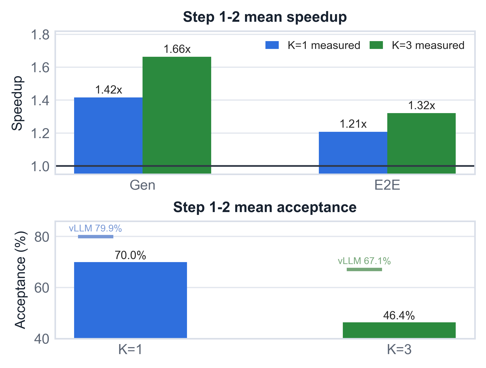
| Mode | Job | Scope | Gen speedup | E2E speedup | Acceptance |
|---|---|---|---|---|---|
| K=1 always | 3136001 | Step 1-2 mean | 1.42x | 1.21x | 70.0% |
| K=3 always | 3136002 | Step 1-2 mean | 1.66x | 1.32x | 46.4% |
This is an early matched signal, not a completed 20-step aggregate. The run uses GBS=512 with 16 generation workers, so each worker sees about 32 responses, closer to the standalone bs32 comparison than the original GBS=2048 runs.
Latest K=3 extended poll: matched Step 1-8 generation average is 1.64x, matched Step 1-7 E2E average is 1.31x, and Step 1-8 acceptance average is 45.9%. Step 9 has K=3 metrics, but its matched baseline is still pending.
Completed NeMo-RL Context
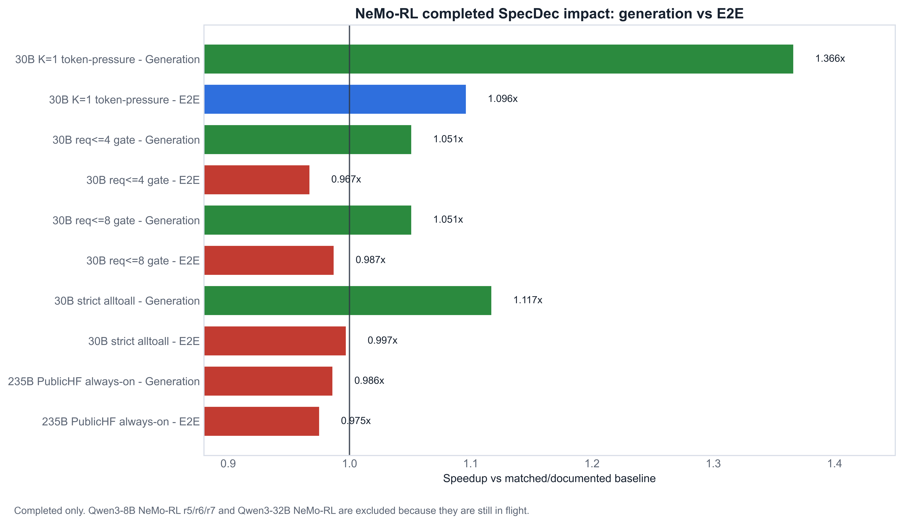
30B Completed K Sweep
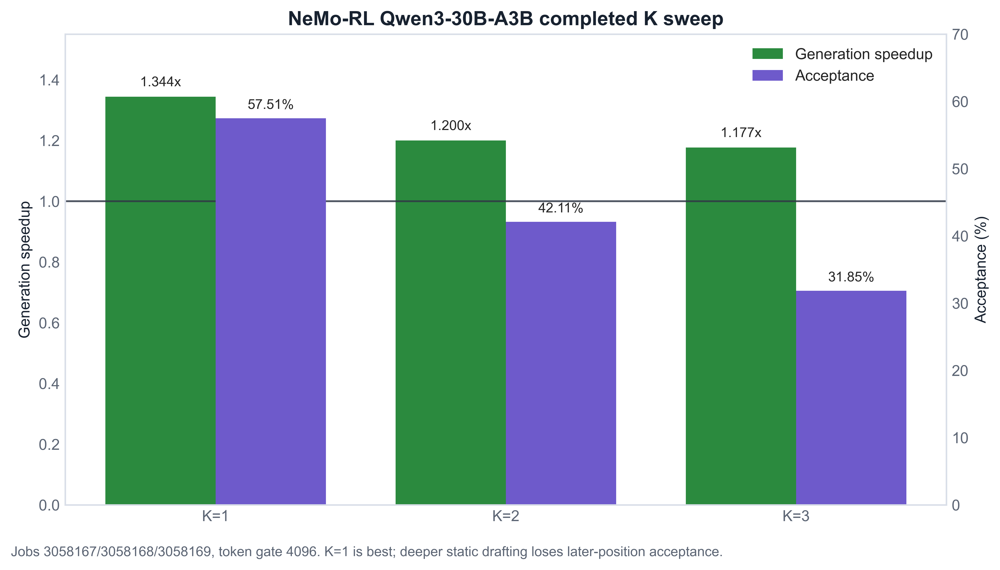
All Completed Evaluation Summary
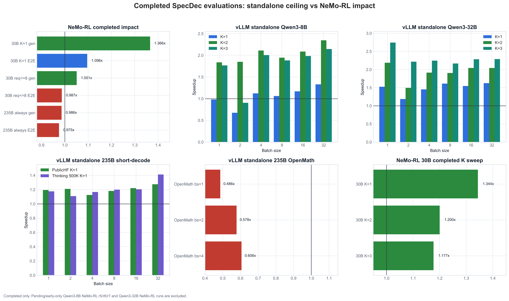